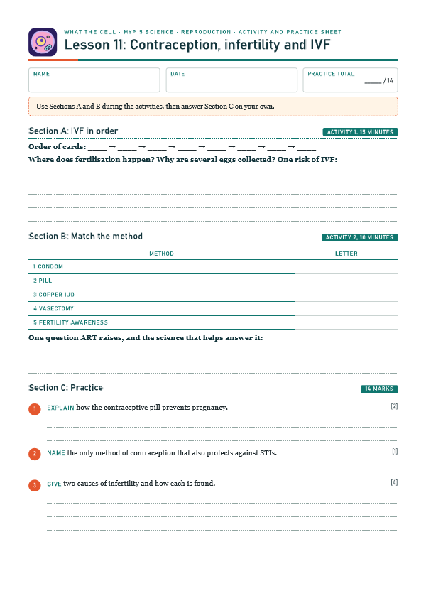

By the end of the lesson you can
- Explain how barrier, hormonal and other methods of contraception work
- Describe causes of infertility and how they are found
- Describe the steps of IVF and ICSI
- Discuss questions that ART raises for people and societies
Keys: arrows or a presentation clicker move the slides, F for full screen. Slides with a red dot have a video or simulation.
Videos (all 5 minutes or less)
- 4:44
Hormones in birth control and fertility treatment
FuseSchool. While you watch: How does the pill stop ovulation? Slide 7.
- 4:47
IVF
FuseSchool. While you watch: Why is the woman given FSH? Slide 11.
Simulations
- Lab
Print and practise

Activity and practice sheet
Used in the lesson’s activities, with practice questions. Your teacher has the answers.
Download (PDF)Lesson 11 slides
All 22 slides in one file, to read again or print. The video buttons on the slides open YouTube.
Download the slides (PDF)Revising? The Revision tab on the unit page has the unit notes and review.
Notes: Contraception, infertility and IVF
contraception
Any method used to prevent pregnancy, by stopping sperm meeting an egg or stopping an embryo implanting.
hormonal contraception
Oestrogen and progesterone in the pill keep FSH and LH low, so no egg matures or is released. For example: the pill, implant, injection.
infertility
Not becoming pregnant after a year of regular unprotected sex. For example: about 1 in 6 people are affected at some time.
IVF
"in vitro" means "in glass": eggs are fertilised outside the body, then an embryo is placed in the uterus. About 1 in 3 cycles succeeds for women under 35..
ICSI
Injecting one sperm directly into an egg, used when sperm are few or cannot swim well.
ART
Assisted reproductive technology: any treatment that handles eggs, sperm or embryos outside the body. For example: IVF, ICSI, egg freezing.
Key words
| contraception | methods that prevent pregnancy |
|---|---|
| barrier method | stops sperm reaching the egg, e.g. condom |
| hormonal contraception | hormones that stop ovulation, e.g. the pill |
| infertility | not becoming pregnant after a year of trying |
| IVF | in vitro fertilisation: eggs fertilised outside the body |
| ICSI | injecting one sperm into an egg |
| ART | assisted reproductive technology |